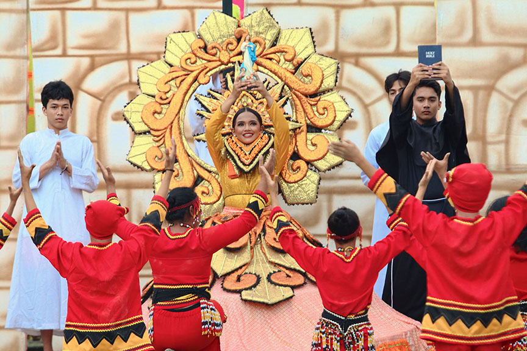
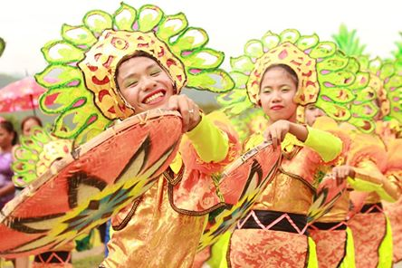

Sirong Festival is a vibrant cultural celebration that showcases the bravery, traditions, and identity of the people of Cantilan. It features energetic street dancing, theatrical reenactments, and colorful costumes inspired by ancient tribal warriors. Performers use coordinated movements, chants, and drumbeats to depict stories of conflict, survival, and unity. The festival serves as an important way of preserving local heritage while educating younger generations about their roots. It also attracts visitors who want to experience authentic cultural performances and traditions.
Imagine the streets filled with dancers moving like warriors, their costumes reflecting history and their movements telling powerful stories. The sound of drums echoes as each group performs with intensity and passion. Spectators become immersed in a living narrative of courage and resilience. Celebrated every August 14, the festival transforms the town into a stage of culture and history. Through this experience, Sirong Festival strengthens community pride and keeps traditions alive.


The origins of Sirong Festival are rooted in local legends and historical accounts of tribal conflicts and defense against invaders. Early communities in Cantilan faced threats from external forces, and these stories of resistance became part of the town’s identity. Over time, these narratives were passed down through generations and eventually transformed into a cultural celebration to keep the history alive.
The festival was formally organized in the early 2000s as part of the town fiesta to revive and preserve these traditions. It became a platform for cultural expression, allowing the community to celebrate their past while educating younger generations. Today, Sirong Festival continues to evolve, blending traditional elements with modern performances while maintaining its historical significance.